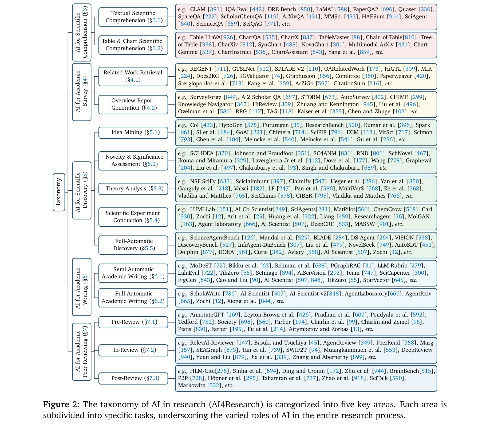
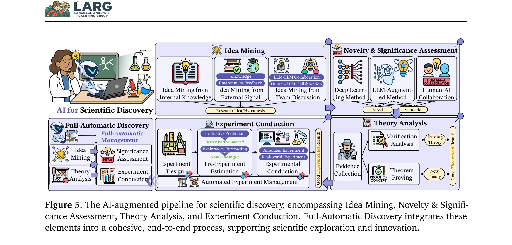

저자: Qiguang Chen, Mingda Yang, Libo Qin, Jinhao Liu, Zheng Yan, Jiannan Guan, Dengyun Peng, Yiyan Ji, Hanjing Li, Mengkang Hu, Yimeng Zhang, Yihao Liang, Yuhang Zhou, Jiaqi Wang, Zhi Chen, Wanxiang Che | 날짜: 2025-07-02 | DOI: 10.48550/arXiv.2507.01903

Figure 2: The taxonomy of AI in research (AI4Research) is categorized into five key areas. Each area is
본 논문은 과학 연구 프로세스의 자동화를 위한 AI 시스템(AI4Research)에 대한 종합 설문을 제시하며, 과학적 이해, 학술 조사, 과학적 발견, 학술 저술, 동료 심사 등 5가지 주요 작업을 체계적으로 분류한다.
Figure 2: The taxonomy of AI in research (AI4Research) is categorized into five key areas. Each area is

Figure 5: The AI-augmented pipeline for scientific discovery, encompassing Idea Mining, Novelty & Signifi-
총평: 본 논문은 급속히 발전하는 AI4Research 분야에 대한 첫 번째 포괄적 설문으로서, 5가지 주요 작업의 체계적 분류, 다학제적 응용 사례, 풍부한 자원 컬렉션을 제공하여 이 분야의 발전을 촉진할 것으로 기대된다. 다만 실제 시스템 구현과 엄밀성 검증에 관한 심화 논의가 추가되면 더욱 가치 있을 것이다.